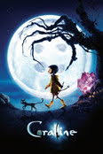
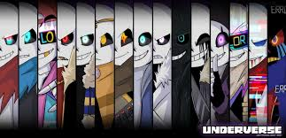

I love the mystery and uniqueness. Absolutely love it! I like that it has mystery and animation techniques that require a lot of dedication. No matter how many times I watch it, I never get bored. Honestly, I also want to try making this kind of animation sometime. Maybe in the distant future.

I really liked the friendship aspect of the story. I loved the 3D animation; it was cute, and the storyline was exciting.I have watched it before and cried every time. When I went to see it in the theater, it was the same, even more intense. The friendship is really good.
้
I love Undertale, and I love how many people are inspired by the game, and this anime is one of them. I like how they integrated fan fiction characters into the story to create a universe, and the soundtrack is excellent, bringing back fond memories.It might be because I only got to know this game when I was 12 years old. By the time I got to play it, I had already been heavily spoiled, but I was happy that I saved money and was finally able to buy the original.But I still regret that the golden era of this game has passed. I really wish I had been born earlier. Even when talking to kids my age, it's still hard to find someone to relate to.